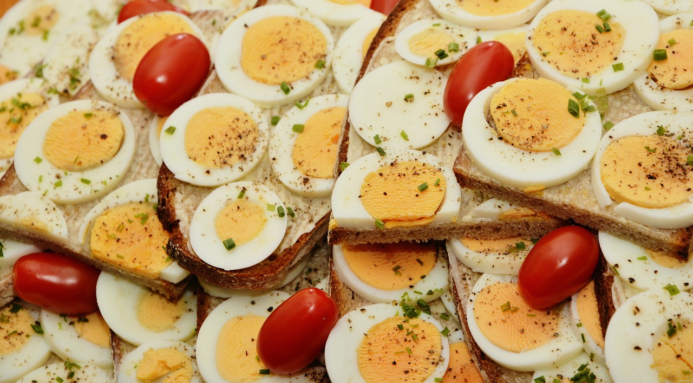

Bootstrap Image Project Rewrite
How to hard boil eggs
With credit to
https://www.loveandlemons.com/how-to-make-hard-boiled-eggs/
A hard boiled egg can make a nice, filling snack or be used to decorate for Easter!
| Step 1: | You'll need eggs and a saucepan, put the eggs in the saucepan in a single layer and fill the saucepan with cold water.
Set the heat of the stove to high until the water reaches a rolling boil. Once the water reaches a boil, turn off the heat and cover the pot. Leave the eggs in the hot water for 12 minutes. |
| Step 2: | After 12 minutes, remove the eggs from the hot water and move them into a bowl of ice water. Leave the eggs in the frozen water for 14 minutes to ensure easier peeling. |
| Step 3: | You now have hard boiled eggs, which you can have as a quick snack or decorate on Easter morning. |


Hover over the slides for additional information!